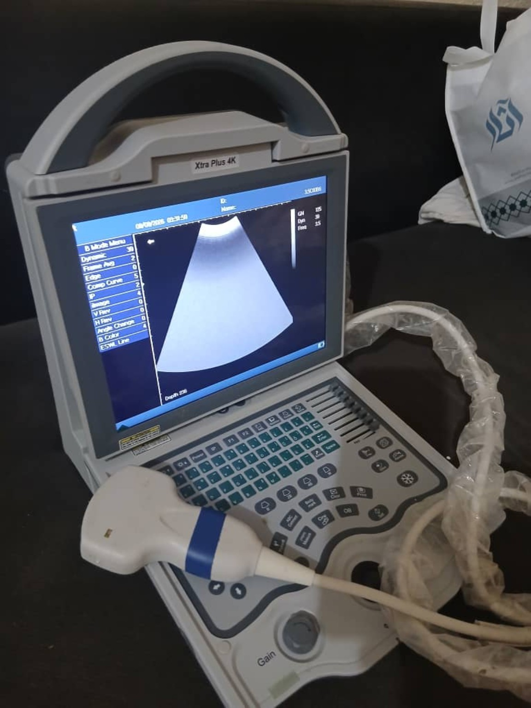

متاح للاستفسار
Xtra Plus 4K
جهاز سونار بيطري محمول لفحص الحيوانات. تواصل معنا لمعرفة المواصفات والتجهيزات المتوفرة.
السعر: يُحدد عند الطلب
اطلب الجهاز
منصة متخصصة تجمع أجهزة السونار البيطري مع التدريب والتعليم ومكتبة الحالات؛ لمساعدة الطبيب البيطري على تطوير مهاراته بثقة.
الأجهزة والملحقات المتاحة للطلب والاستفسار.

جهاز سونار بيطري محمول لفحص الحيوانات. تواصل معنا لمعرفة المواصفات والتجهيزات المتوفرة.
استفسر عن أنواع المجسات والتوافق مع جهازك قبل الشراء.
ملحقات الجهاز والشواحن والحقائب وطلبات الصيانة.
ملاحظة: تُحدّث حالة التوفر والأسعار بعد تأكيدها من إدارة المنصة. لا يتم تأكيد الطلب أو الدفع من هذه النسخة التجريبية.
تعلم السونار البيطري خطوة بخطوة.
التعرف على الجهاز والمجس، إعدادات الصورة، ومبادئ فحص الحمل.
سجل اهتمامكالتعرف على العلامات التصويرية وقياسات الجنين وأخطاء التفسير الشائعة.
سجل اهتمامكمبادئ الفحص والتعامل مع اختلافات الأنواع الحيوانية.
سجل اهتمامكالدورات المعروضة هنا تعريفية مبدئية. تُضاف مواعيدها ورسومها ومحتوياتها النهائية بعد اعتمادها. شهادة الإتمام لا تعني ترخيصاً مهنياً أو اعتماداً حكومياً.
مساحة لإضافة صور وفيديوهات حالات السونار وشروحاتها.
خطوات بسيطة للشراء أو التعلم.
تصفح الجهاز أو الدورة المناسبة لك.
أرسل استفسارك لمعرفة السعر والتوفر والتفاصيل.
أكمل طلبك أو سجل اهتمامك بالدورة.
للطلبات والاستفسارات والتسجيل في الدورات.
تعرف على جهاز السونار البيطري ومجساته


متوفر نقداً أو بالتقسيط عبر تابي وتمارا
اطلب بالتقسيط عبر تابي وتمارا اطلب نقداً بدون تقسيط🚚 التوصيل لجميع دول الخليج مشمول في الأسعار
طوّر مهاراتك في فحص وتشخيص الحيوانات باستخدام السونار

نفخر بانضمام المتدربين إلى مجتمع السونار البيطري.

المؤسس والمدير – VETSONO
طبيب بيطري مهتم بتطوير ونشر مهارات السونار البيطري، والتعليم والتقنيات الحديثة في تشخيص أمراض الحيوانات.
VETSONO – المعرفة والتقنية لخدمة الطب البيطري